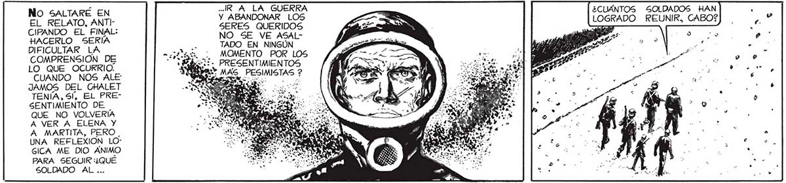
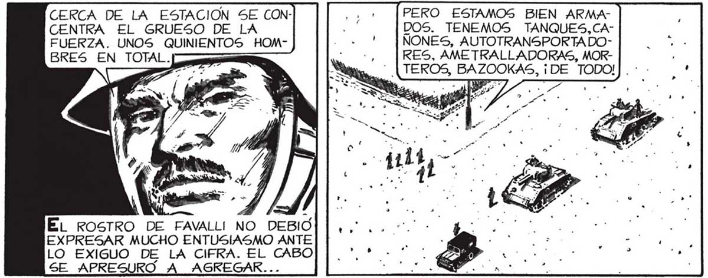
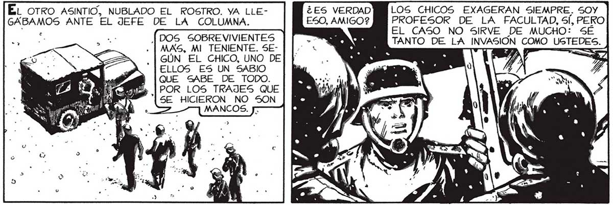

82 - IR A LA GUERRA No SALTARÉ EN EL RELATO, ANTI Y ABANDONAR LOS CIPANDO EL FINAL: SERES QUERIDOS HACERLO _ SERÍA O dl O COMPRENSIÓN DE BAT. PRESENTIMIENTOS LO QUE OCURRIO. EN aa NOS 48 MERO MAS, PESIMISTAS ? JAMOS DEL GHALET pS E TENIA, Sl, EL PRESENTIMIENTO DE QUE NO VOLVERÍA A VER A ELENA Y A MARTITA, PERO. UNA REFLEXION LO” SICA ME DIO ANIMO PARA SEGUIR :¿QUÉ SOLDADO AL ... FAVALLI, COMO BUEN CIENTIFICO, NO MIRABA PARA ATRAS: SÓLO LE INTERESABA LA TAREA QUE TENIAMOS POR DELANTE: VENCER AL INVASOR. AQUÍ EN LA AVENIDA E TENEMOS TREINTA . CERCA DE LA ESTACION SE CONCENTRA EL GRUESO DE LA FUERZA. UNOS QUINIENTOS HOMBRES EN TOTAL. EL ROSTRO DE FAVALLI NO DEBIO EXPRESAR MUCHO ENTUSIASMO ANTE LO EXIGUO DE LA CIFRA. EL CABO SE APRESURO A AGREGAR.. HOM... TAMBIEN LOS CINCO BOMBARDEROS QUE PASARON HACE POCO ESTARÍAN ARMADOS HASTA LOS DIENTES, Y ASÍ” LES : FUE.¿LOS VIERON USTEDES? El OTRO ASINTIO, NUBLADO EL ROSTRO. YA LLE- ¿ES VERDAD GABAMOS ANTE EL JEFE DE LA COLUMNA. ESO, AMIGO? |DOS SOBREVIVIENTES . | MAS, MI TENIENTE. SEGÚN EL CHICO, UNO DE ELLOS ES UN SABIO QUE SABE DE TODO. POR LOS TRAJES QUE SE HICIERON NO SON MANCOS. Jr ¿CUANTOS SOLDADOS HAN LOGRADO REUNIR, CABO? PERO ESTAMOS BIEN ARMADOS. TENEMOS TANQUES,CAÑONES, AUTOTRANSPORTADORES, AMETRALLADORAS, MOR" + | TEROS, BAZOOKAS, ¡DE TODO!| LOS CHICOS EXAGERAN SIEMPRE. SOY PROFESOR DE LA FACULTAD, Sl, PERO EL CASO NO SIRVE DE MUCHO: SÉ TANTO DE LA INVASIÓN pi USTEDES.


